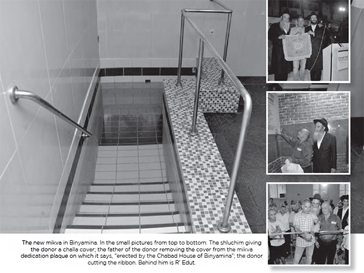

Chabad Mikva – 25 Years in the Making
He was moved to receive this token of their appreciation along with a bottle of water from the mikva the Rebbe had immersed in, in addition to a challa cover which incorporated a piece of the towel that the Rebbe used.

…There is a thunderous applause as the donor is called up to the podium to receive an award from the shluchim of Moshava Binyamina, Rabbi Yehoshua Edut and Rabbi Menachem Lerner. The hundreds of residents of the moshava who are participating in the event are celebrating the dedication of the Chabad mikva, along with rabbanim, public figures and other dignitaries…
This event didn’t actually happen. It was something R’ Edut dreamed about as he walked to the mikva in Ohr Akiva, forty minutes from Binyamina. He walked on dirt roads, thinking about the pathetic state of affairs. He had another twenty-five minutes of walking before he would reach the mikva. His feet hurt and his head ached, but he wanted to immerse himself before Shacharis on Shabbos.
There was a time that R’ Edut and mekuravim of the Chabad House immersed in Nachal HaTaninim, which is north of Binyamina, taking care not to cut themselves on rocks and other hazards. Needless to say, immersing in the winter months in the rain was no picnic.
The best mikva in Binyamina during the twenty-five years they had to walk from mikva to mikva was the swimming pool in the yard of a mekurav. He put up a canvas tent in his yard and the pool was turned into a mikva during the summer.
CELEBRATING THE GROUNDBREAKING
Ten years went by, and one day R’ Edut heard that the religious council and the local council had announced a groundbreaking ceremony for a new mikva in the moshava. Rabbi Yisroel Meir Lau, then the chief rabbi, was invited to the event. For some reason – perhaps it was an oversight – the shliach to the moshava was not invited. R’ Edut was not thrilled by the omission of a person who had taken care of the religious needs of the residents for years, but he decided not to make an issue of it. He merely made sure, with the help of his connections, to get an invitation.
The event took place and construction began. Within a short time the shell of the mikva was up, but then construction stopped. One day followed another and there was no progress. The shliach’s hope that there would finally be a mikva for the community suddenly seemed to fade away.
After inquiries were made, it turned out that the council owed a lot of money to the contractor, and since it couldn’t pay him, construction had stopped. The building remained abandoned for a long time and became a hangout for undesirables.
After seventeen years during which the contractor was not paid, a new chairman was appointed to the religious council. He quickly took care of the matter of the mikva, paying what was owed the contractor, but the construction did not proceed.
UNEXPECTED GUEST
In the meantime, the shlichus in Binyamina developed and R’ Edut had R’ Lerner join him. When they found that money was no longer owed, they decided to speak to the council chairman and ask him to allow the mikva to be completed so that there would be a working mikva for the upcoming winter. The chairman agreed and now the only obstacle was money. The shluchim wracked their brains – where could they get the money to finish the building?
One Shabbos, a tenth man was missing for Mincha at the Chabad House. R’ Edut went outside to see if he could find a tenth man. He noticed someone walking with his son in the direction of the nearby Sephardic shul. He approached the man and asked him to join the minyan.
When the man walked into the Chabad House, which was very small, he asked R’ Edut in astonishment, “You plan on davening here on the holidays without an air conditioner?” On the spot, he asked the shliach to come to his office after Shabbos to get a check for a new air conditioner. A week later, he donated a new bima for the Torah reading and then he donated an Aron Kodesh. The sum total of his donations was in the tens of thousands of shekels and he became a regular at the Chabad House.
When the shluchim saw that the man was interested in furthering matters of k’dusha and that he had the financial ability to do so, they decided to tell him about the unfinished mikva in Binyamina. To their surprise, they discovered that this man was the contractor! When he heard that they had been given the shell of the building and that they wanted to finish the construction before the winter, he decided to do the job for 16,000 shekels on his account. When he visited the site to see what needed to be done, he told the shluchim that that amount would hardly cover anything, but he would cover all the costs of renovation.
After so many years of neglect, the building was in terrible shape, to the extent that the first crew that the contractor brought to the place left when they saw what was involved. When the construction finally began, the expenses continued to mount until they reached the sum of 280,000 shekels – with the contractor paying it all.
And that is how, after twenty-five years, R’ Edut’s dream finally came true. The event was celebrated on 12 Tammuz 2011 and attended by the contractor-donor, Mr. Gabi Nidam, along with R’ Dovid Chalamish, the rav of Binyamina, and Givat Ada, the local council leader, his deputy, the head of the religious council, and other dignitaries.
There was a thunderous applause as Mr. Nidam was called up to the podium to receive an award from the shluchim. He was moved to receive this token of their appreciation along with a bottle of water from the mikva the Rebbe had immersed in, in addition to a challa cover which incorporated a piece of the towel that the Rebbe used.
The hundreds of residents who participated in the event felt the historic nature of the moment. For the first time, since the moshava was founded ninety years earlier, a mikva was being dedicated.
WHEN ZUSHE PARTISAN SUDDENLY ENTERED THE KOLLEL
How did R’ Edut get to Binyamina? For that, we need to go back twenty-five years …
R’ Yehoshua Edut, a newly married man, was learning in kollel in Kfar Chabad. One day, the Chassid R’ Zushe Partisan, suddenly walked in and announced in his usual excitable manner, “Bachurim, you need to go on shlichus!” R’ Edut caught R’ Zushe’s fervor and on the spot decided he had to go on shlichus.
After inquiries were made, he joined the shlichus in Beit Dagan run by R’ Shmuel Gromach, where he did his training for his future shlichus. After a year of shlichus in Beit Dagan, R’ Edut and his wife looked for a relatively small place for shlichus that would suit their ambitions and abilities. R’ Edut’s parents live in Netanya and from there it is not far to Binyamina.
They liked the place and wrote to the Rebbe about it. The answer was: As is known and publicized, with the approval of rabbanei Chabad and askanei Chabad and knowledgeable friends.
They spoke with R’ Yaroslavsky and R’ Aharonov as well as R’ Labkovsky from Kfar Chabad, and after they gave their consent, they went on shlichus to Binyamina.
THE BOY’S LIFE WAS SAVED
“At first,” recalled R’ Edut, “it was hard to obtain chickens with a mehudar sh’chita. Then I heard that in Kfar Pinnes near Binyamina we could buy live chickens. I got into my little car and headed for the k’far. When I got there, I found out it wasn’t true. There were no chickens. I was upset about the waste of time. On my way back, I noticed two women and a little boy who were motioning hysterically for me to stop.
“I stopped near them and saw that the boy had swallowed his tongue and was in danger of choking. I immediately had them get in my car and I raced off to the doctor in Pardes Chana while trying to help the boy. In the end, with Siyata D’Shmaya, the doctor managed to release his tongue with a pair of tongs and the boy’s life was saved. I felt it wasn’t for naught that I had gone to buy chickens. It was so that I would be in the right place at the right time.”
THE POWER OF ALL ERETZ YISROEL
Moshava Binyamina is not a busy shlichus which produces jaw-dropping stories. The moshava is quiet and calm, but the stories of the work of the shluchim are unique and inspiring in their own way.
A number of years ago, Tzeirei Chabad had a Torah written in the merit of the shluchim in Eretz Yisroel. After the writing was completed, a raffle was held and the Chabad House in Binyamina won the Torah. “Since then, all aspects of the shlichus here received kochos from all of Eretz Yisroel! I will mention just one small miracle. There was a person who did not have children for many years. When we won the Torah, he donated the mantle. That year he had a son!
“A month after we won, R’ Lerner joined the shlichus and he brought a new chayus into it. A Chabad preschool opened in Binyamina, which is run by Mrs. Lerner. The Chabad House opened a Judaica store and this is in addition to the usual shiurim and farbrengens, holiday activities, giving out food packages and, mainly, preparing the Jews of Binyamina for Moshiach.”
EVERY SMALL ACTION COUNTS
When he started talking about shlichus stories, he didn’t stop. Here is one of them:
A woman called the Chabad House and asked me to come and put up one mezuza in her home. I explained that mezuzos are needed on all the doorposts, but she said, “No, I only want one mezuza and in that z’chus, I will have a child.” I put up a mezuza and wrote her request to the Rebbe and she had a son whom she calls the Rebbe’s child.
***
One year, the Rebbe asked that every shliach go out and arrange gatherings in yishuvim near his place of shlichus. I went to Moshav Beit Chananya where R’ Menachem Tal is the shliach today. I arranged a minyan in the shul and spoke to them after the davening. Then a man with long hair came over and asked me: What does a Jew need to do when he gets up in the morning?
I explained about saying Modeh Ani and ended up arranging to give a shiur in Tanya in his house. Today, he is frum and his children attend Chabad schools.
A similar story happened when I met someone on Sukkos who runs a bee farm. When he saw me he asked, “What are those things you are holding?”
I explained what the Dalet Minim are and he said the bracha over them for the first time in his life. Since then, he became more involved until his entire family became baalei t’shuva. He sold his business and moved to a religious environment so that his children would receive a religious education.
On another occasion, two people who had come back from India came into the Chabad House. They had long unkempt hair and their general appearance was not very appealing. I welcomed them and we sat together and learned from the Rebbe’s Hisvaaduyos. Today, they are religious. Later on, they told me that what especially affected them was that I had welcomed them graciously while ignoring their appearance.
On my first years of shlichus, it was hard to arrange a minyan for t’fillos on Friday night in the Chabad House. One day, a group of young men came to me with the suggestion that I serve refreshments after the davening and they would come on a regular basis. Of course I was happy with this deal.
Once, in the middle of the week, we were missing a tenth man. I went to the nearby park and saw those guys sitting around idly. I went over to one of them who had emigrated from Russia as a little boy and asked him to come and complete the minyan. He came, and from that point on began to show interest in getting more involved in Torah and mitzvos.
When he was little, I made sure that he had a bris and I was even his sandak. I also arranged a nice bar mitzva for him in the Gutnick hall in Yerushalayim. He eventually went to the Chabad yeshiva in Ramat Aviv. From there he went to the yeshiva in Tzfas and today he is a Chassidishe young talmid chacham, who works as a shliach in one of the yishuvim here.
A BRIS MILA THANKS TO A SHOFAR
Near my house lives a family whose daughter went to Russia and married a Russian gentile. Every year she comes and visits her parents. Each time, I suggested that she circumcise her son, but she pushed me off with various excuses.
When the son was already five years old and I asked her again, she said he had a virus and it was dangerous for him to have a bris. I got the shliach in Netanya, R’ Menachem Wolpo, involved. He suggested to her that he bless the boy that nothing untoward would happen. Finally, after much convincing and brachos, she agreed to a bris when her gentile husband had already left for Russia.
In order not to entail unnecessary danger, we consulted with a doctor in a hospital who said that the virus wasn’t a cause for concern and we could go ahead with a bris. When we finally wanted to check his blood before the bris, the nurse who takes blood from little children was not around. This was a delicate situation, for either we checked his blood and went ahead with the bris, or it wouldn’t happen.
This was Rosh Chodesh Elul, the first day we blow the shofar. I took out a shofar and told the mother that I would blow the shofar and the nurse who took blood from older people would take blood from her son. The nurse found a vein and took blood and the bris was performed shortly thereafter. I was the sandak and the boy was given the name Daniel.
L’CHAIM!
I once ran into someone who had prepared for his bar mitzva with me. He came over to me and said he still remembers that when we learned on special days in the Chabad calendar, I would say a L’chaim with him. After the army, he had gone to India and become connected with the Chabad House of R’ Shimi Goldstein. When he returned to Binyamina he became a Lubavitcher Chassid. He has a beautiful Chassidishe family.
One year, we did six menorah lightings around the moshava. When I got to the sixth and final menorah, it was already after eight in the evening. I went over to light it and a man showed up, a recent Russian immigrant – this was during the big wave of immigration from Russia – and he told me that he had never lit a menorah. I gave him the honor and that is how the man came to light the menorah for the first time in his life, one that was six meters high.
Savyon. "Chabad Mikva – 25 Years in the Making." Beis Moshiach, no. 875 (April 11, 2013).